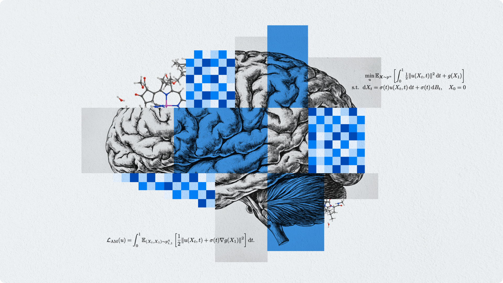

2025年5月14日，Meta旗下基础AI研究团队（FAIR）发布了一系列激动人心的开源成果，再次彰显了其通过聚焦科学与学术进步，致力于实现先进机器智能（AMI）的决心。此次发布的模型、基准和数据集，预示着在分子性质预测、语言处理和神经科学等领域的研究方法可能迎来深刻变革。Meta FAIR强调，通过广泛分享其研究成果，旨在为AI社区提供便捷的访问途径，并助力构建一个能够加速进步、驱动创新、惠及全社会（包括国家级研究实验室）的开放生态系统。

核心亮点一：原子尺度的革命 —— Open Molecules 2025 (OMol25) & Meta通用原子模型 (UMA)
在加速工业进步的新分子开发、储能与气候变化缓解的新材料探索等诸多重大科技挑战中，科学家和工程师们都面临着在原子尺度进行设计的核心难题。传统的实验发现与设计过程往往耗时数十年。Meta FAIR正致力于通过开发精确且可泛化的机器学习模型，来大幅加速这一进程。这些模型能够预测原子尺度的运动和行为，从而缩短分子与材料发现的研发周期，为创新与应用开辟新可能。
- Open Molecules 2025 (OMol25) —— 量子化学计算新高峰
- 是什么：一个全新的密度泛函理论（DFT）数据集，将Meta开放科学模拟数据集家族（此前已有Open Catalyst, Open DAC, Open Materials系列）扩展到了分子化学领域。
- 解决了什么问题：DFT等基础量子化学方法能够预测分子和材料的原子级性质，尤其在化学键断裂与形成等复杂场景中作用关键。OMol25作为迄今为止最大且最多样化的高精度量子化学计算数据集，专注于生物分子、金属配合物和电解质，为医疗健康和储能技术领域的原子尺度设计带来了前所未有的精度。
- 技术突破：OMol25（使用高性能量子化学程序包ORCA构建）包含了以往难以企及的大型原子体系的模拟。相较于以往通常只包含20-30个原子且元素种类有限的小型分子数据集，OMol25实现了巨大飞跃，其构型规模扩大了高达10倍，并包含了多种不同元素间的复杂相互作用，总计算量耗费了60亿核小时。
- 下载与论文：数据集和模型已开放下载，相关论文也已发布。
- Meta通用原子模型 (UMA) —— 跨尺度原子相互作用建模新标杆
- 是什么：一种机器学习的原子间势（interatomic potential）模型，为模拟多种材料和分子中原子间的相互作用设立了新标准。
- 解决了什么问题：UMA在Meta过去五年发布的所有数据集（包含超过300亿个原子，涵盖分子与材料）上进行了训练，为研究者提供了一个基础模型。它能更准确地预测分子行为，增进对分子行为的理解，并可作为下游应用和微调任务的通用基础。
Meta FAIR相信，OMol25和UMA的结合，有潜力解锁分子与材料研究的新能力，这是其加速原子尺度材料设计的开放科学长期规划中的重要一步。他们还正与劳伦斯利弗莫尔国家实验室等伙伴合作，将这些数据集和模型扩展到如聚合物等新的分子类别。
核心亮点二：Adjoint Sampling —— 无数据也能训练的“奖励驱动”生成模型
传统生成模型通常需要大量数据来学习模式并生成相似样本。但在许多专业应用中，训练数据可能极其有限甚至完全没有，此时训练这些模型变得不切实际。取而代之的是，系统仅提供一个标量奖励信号，用于验证模型是否正在生成“好”的样本。例如，微调图像/视频生成模型，或从物理/化学基础模型中学习采样。
- Adjoint Sampling —— 可扩展的“无数据”训练新范式
- 是什么：一种基于FAIR开发的理论基础，采用高度可扩展的、基于奖励的目标来训练生成模型，而无需任何训练数据。
- 解决了什么问题：Adjoint Sampling并非从现有数据中寻找模式，而是通过根据提供的奖励模型迭代地优化其自身生成的样本来发现模式。它引出了一种高度可扩展的实用算法，并可能成为未来高度可扩展的奖励驱动生成模型研究的基础。
- 应用展示：Adjoint Sampling在从大规模能量模型（如UMA）生成多样化分子方面表现出色。
- 开放共享：Meta FAIR正在发布其算法和一个新的大规模基准测试，希望以此推动计算化学领域的进一步发展。
核心亮点三：解码大脑语言之谜 —— Meta FAIR与罗斯柴尔德基金会医院的联合研究
理解大脑如何习得语言，一直是AI和神经科学领域最大的挑战之一。Meta FAIR与罗斯柴尔德基金会医院合作，进行了一项大规模研究，利用广泛的神经记录来系统地绘制语言表征在儿童大脑发育过程中如何涌现，并揭示了其与大型语言模型（LLM）之间惊人的相似之处。
- 研究背景：尽管LLM展现出卓越的语言能力，其内部激活模式甚至自发地与人脑相似，但两者之间存在一个巨大鸿沟：人类习得语言的效率极高，所需词汇量比LLM少约1000倍。大脑如何实现这一壮举，是认知科学的重大谜团，也是让AI系统像人类一样学习和推理的主要挑战。
- 研究方法与发现：
- 研究团队分析了超过40名癫痫患者（作为其治疗的一部分，植入了皮层记录设备）在听有声读物时，从7000多个电极记录到的神经信号。
- 这项大规模数据集为我们提供了前所未有的视角，揭示了儿童期语言神经表征的演变过程。
- 通过AI算法解码这些神经信号，团队发现，即使是年仅2岁的幼儿，其大脑皮层中也已展现出广泛的语音表征。随着大脑的成熟，这些神经表征支持着日益丰富和复杂的语言处理。
- 引人注目的是，这种发育轨迹在wav2vec 2.0和Llama 3.1等AI模型中得到了自发的映现——随着训练的进行，这些模型的内部激活模式与成人大脑的激活模式越来越相似。
- 研究意义：这些发现表明，曾经受大脑启发的AI模型，如今反过来可以帮助我们揭示大脑的内部运作机制。这不仅为支持语言发育的新临床工具开辟了道路，更为理解人类智能提供了一个全新的框架。
结语：开放引领，智能未来可期
Meta FAIR此次发布的OMol25数据集、UMA通用原子模型、Adjoint Sampling无数据生成算法，以及与神经科学的交叉研究成果，无疑为AI赋能科学研究注入了强劲动力。通过将这些前沿的工具、数据和方法向全球研究社区开放，Meta FAIR正积极践行其推动开放生态系统、加速科学进步、惠及全社会的承诺。
这些突破性的进展，不仅有望彻底改变我们在原子尺度设计新分子新材料的方式，革新生成模型的训练范式，更将深化我们对人类语言学习这一认知科学核心问题的理解。对于科研人员而言，这是一个充满机遇的时代。利用好这些开源的“利器”，无疑将加速从基础研究到实际应用的转化，催生更多跨领域的创新火花。我们期待看到AI社区如何利用这些新资源，共同推动科学边界的拓展。